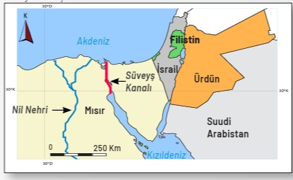
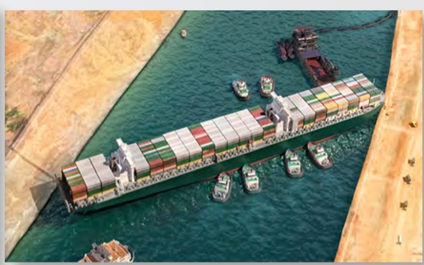
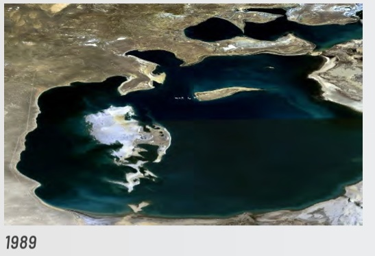
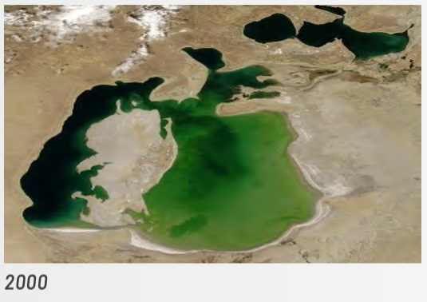
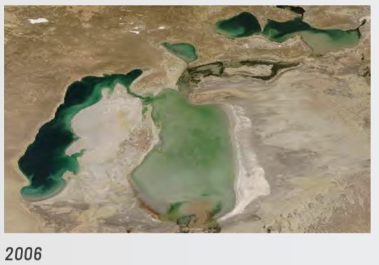
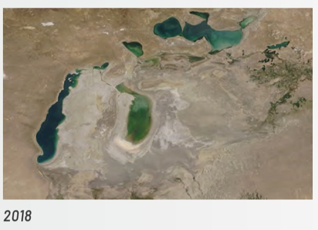
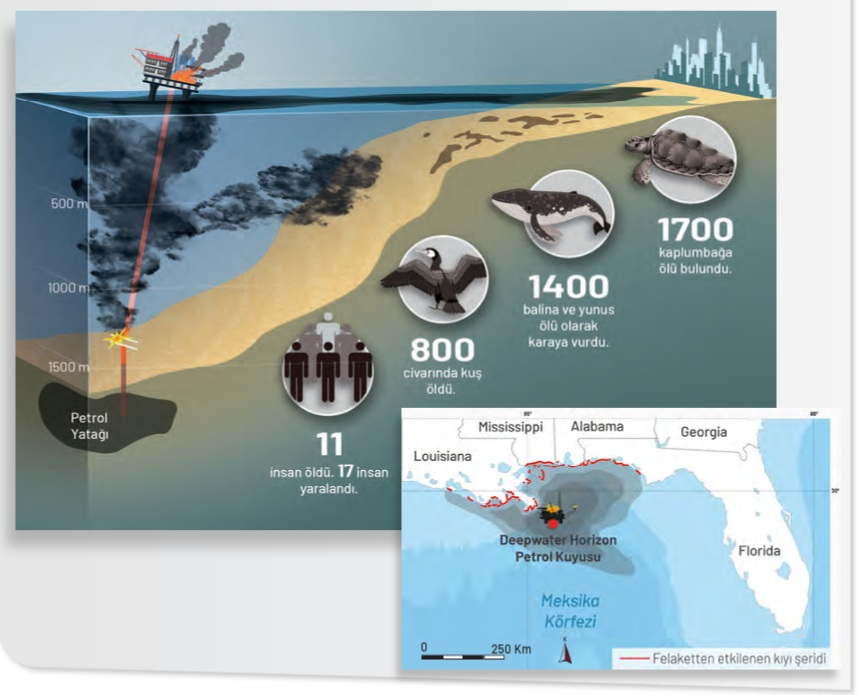

1-4. Sorular: Süveyş Kanalı ve Ever Given Kazası

Süveyş Kanalı Konum Haritası[cite: 12]

Ever Given Kaza Görseli[cite: 12]
5-8. Sorular: Aral Gölü'nün Kuruma Süreci

1989 Yılı[cite: 12]

2000 Yılı[cite: 12]

2006 Yılı[cite: 12]

2018 Yılı[cite: 12]
9-10. Sorular: Meksika Körfezi Petrol Kuyusu Felaketi

Deepwater Horizon Felaket Bilgi Görseli[cite: 12]